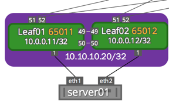
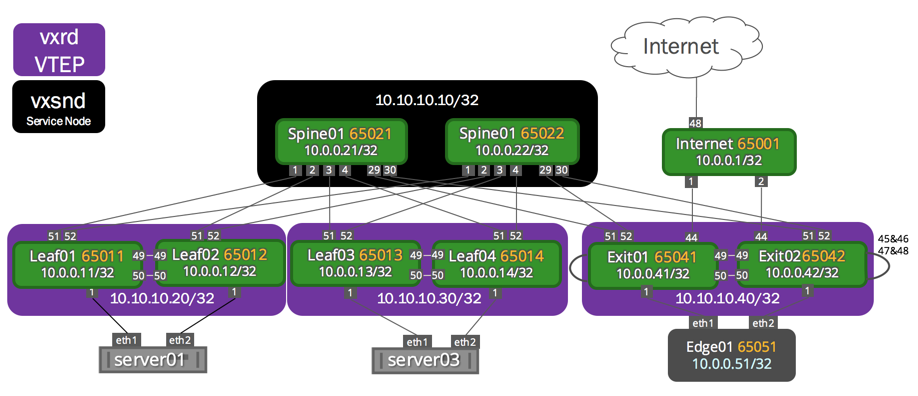

LNV VXLAN Active-Active Mode
LNV active-active mode allows a pair of MLAG switches to act as a single VTEP, providing active-active VXLAN termination for bare metal as well as virtualized workloads.
Contents
Terminology and Definitions
|
Term |
Definition |
|
vxrd |
VXLAN registration daemon. Runs on the switch that is mapping VLANs to VXLANs. The vxrd daemon needs to be configured to register to a service node. This turns the switch into a VTEP. |
|
VTEP |
Virtual tunnel endpoint. This is an encapsulation and decapsulation point for VXLANs. |
|
active-active VTEP |
A pair of switches acting as a single VTEP. |
|
ToR |
Top of rack switch. Also referred to as a leaf or access switch. |
|
Spine |
The aggregation switch for multiple leafs. Specifically used when a data center is using a Clos network architecture. Read more about spine-leaf architecture in this white paper. |
|
vxsnd |
VXLAN service node daemon, that can be run to register multiple VTEPs. |
|
exit leaf |
A switch dedicated to peering the Clos network to an outside network. Also referred to as border leafs, service leafs or edge leafs. |
|
anycast |
When an IP address is advertised from multiple locations. Allows multiple devices to share the same IP and effectively load balance traffic across them. With LNV, anycast is used in 2 places:
|
|
ASIC |
Application-specific integrated circuit. Also referred to as hardware, or hardware accelerated. Encapsulation and decapsulation are required for the best performance VXLAN-supported ASIC. |
|
RIOT |
Broadcom feature for Routing in and out of tunnels. Allows a VXLAN bridge to have a switch VLAN interface associated with it, and traffic to exit a VXLAN into the layer 3 fabric. Also called VXLAN Routing. |
|
VXLAN Routing |
Industry standard term for ability to route in and out of a VXLAN. Equivalent to Broadcom RIOT feature. |
Configuring LNV Active-Active Mode
LNV requires the following underlying technologies to work correctly.
|
Technology |
More Information |
|
MLAG |
Refer to the MLAG chapter for more detailed configuration information. Configurations for the demonstration are provided below. |
|
OSPF or BGP |
Refer to the OSPF chapter or the BGP Chapter for more detailed configuration information. Configurations for the demonstration are provided below. |
|
LNV |
Refer to the LNV chapter for more detailed configuration information. Configurations for the demonstration are provided below. |
|
STP |
BPDU filter and BPDU guard should be enabled in the VXLAN interfaces if STP is enabled in the bridge that is connected to the VXLAN. |
active-active VTEP Anycast IP Behavior
Each individual switch within an MLAG pair should be provisioned with a virtual IP address in the form of an anycast IP address for VXLAN data-path termination. The VXLAN termination address is an anycast IP address that you configure as a clagd parameter (clagd-vxlan-anycast-ip) under the loopback interface. clagd dynamically adds and removes this address as the loopback interface address as follows:
|
1 |
When the switches boot up, ifupdown2 places all VXLAN interfaces in a PROTO_DOWN state. The configured anycast addresses are not configured yet. |
|
2 |
MLAG peering takes place, and a successful VXLAN interface consistency check between the switches occurs. |
|
3 |
clagd (the daemon responsible for MLAG) adds the anycast address to the loopback interface. It then changes the local IP address of the VXLAN interface from a unique address to the anycast virtual IP address and puts the interface in an UP state. |
Failure Scenario Behaviors
|
Scenario |
Behavior |
|
The peer link goes down. |
The primary MLAG switch continues to keep all VXLAN interfaces up with the anycast IP address while the secondary switch brings down all VXLAN interfaces and places them in a PROTO_DOWN state. The secondary MLAG switch removes the anycast IP address from the loopback interface and changes the local IP address of the VXLAN interface to the configured unique IP address. |
|
One of the switches goes down. |
The other operational switch continues to use the anycast IP address. |
|
clagd is stopped. |
All VXLAN interfaces are put in a PROTO_DOWN state. The anycast IP address is removed from the loopback interface and the local IP addresses of the VXLAN interfaces are changed from the anycast IP address to unique non-virtual IP addresses. |
|
MLAG peering could not be established between the switches. |
clagd brings up all the VXLAN interfaces after the reload timer expires with the configured unique IP address. This allows the VXLAN interface to be up and running on both switches even though peering is not established. |
|
When the peer link goes down but the peer switch is up (i.e. the backup link is active). |
All VXLAN interfaces are put into a PROTO_DOWN state on the secondary switch. |
|
A configuration mismatch between the MLAG switches |
The VXLAN interface is placed into a PROTO_DOWN state on the secondary switch. |
Checking VXLAN Interface Configuration Consistency
The LNV active-active configuration for a given VXLAN interface has to be consistent between the MLAG switches for correct traffic behavior. MLAG ensures that the configuration consistency is met before bringing up the VXLAN interfaces.
The consistency checks include:
-
The anycast virtual IP address for VXLAN termination must be the same on each pair of switches.
-
A VXLAN interface with the same VXLAN ID must be configured and administratively up on both switches.
You can use the clagctl command to check if any VXLAN switches are in a PROTO_DOWN state.
Configuring the Anycast IP Address
With MLAG peering, both switches use an anycast IP address for VXLAN encapsulation and decapsulation. This allows remote VTEPs to learn the host MAC addresses attached to the MLAG switches against one logical VTEP, even though the switches independently encapsulate and decapsulate layer 2 traffic originating from the host. The anycast address under the loopback interface can be configured as shown below.

leaf01: /etc/network/interfaces snippet
auto loiface lo inet loopback address 10.0.0.11/32 vxrd-src-ip 10.0.0.11 vxrd-svcnode-ip 10.10.10.10 clagd-vxlan-anycast-ip 10.10.10.20leaf02: /etc/network/interfaces snippet
auto loiface lo inet loopback address 10.0.0.12/32 vxrd-src-ip 10.0.0.12 vxrd-svcnode-ip 10.10.10.10 clagd-vxlan-anycast-ip 10.10.10.20Explanation of Variables
|
Variable |
Explanation |
vxrd-src-ip |
The unique IP address for the vxrd to bind to. |
vxrd-svcnode-ip |
The service node anycast IP address in the topology. In this demonstration, this is an anycast IP address being shared by both spine switches. |
clagd-vxlan-anycast-ip |
The anycast address for the MLAG pair to share and bind to when MLAG is up and running. |
Example VXLAN Active-Active Configuration

Note the configuration of the local IP address in the VXLAN interfaces below. They are configured with individual IP addresses, which clagd changes to anycast upon MLAG peering.
Quagga Configuration
The layer 3 fabric can be configured using BGP or OSPF. The following example uses BGP Unnumbered. The MLAG switch configuration for the topology above is shown below.
Layer 3 IP Addressing
The IP address configuration for this example:
|
spine01: /etc/network/interfaces auto loiface lo inet loopback address 10.0.0.21/32 address 10.10.10.10/32 auto eth0iface eth0 inet dhcp# downlinksauto swp1iface swp1auto swp2iface swp2auto swp3iface swp3auto swp4iface swp4auto swp29iface swp29auto swp30iface swp30 |
spine02: /etc/network/interfaces auto loiface lo inet loopback address 10.0.0.22/32 address 10.10.10.10/32auto eth0iface eth0 inet dhcp# downlinksauto swp1iface swp1auto swp2iface swp2auto swp3iface swp3auto swp4iface swp4auto swp29iface swp29auto swp30iface swp30 |
|
leaf01: /etc/network/interfaces auto loiface lo inet loopback address 10.0.0.11/32 vxrd-src-ip 10.0.0.11 vxrd-svcnode-ip 10.10.10.10 clagd-vxlan-anycast-ip 10.10.10.20 auto eth0iface eth0 inet dhcp# peerlinksauto swp49iface swp49auto swp50iface swp50auto peerlinkiface peerlink bond-slaves swp49 swp50 bond-mode 802.3ad bond-miimon 100 bond-use-carrier 1 bond-lacp-rate 1 bond-min-links 1 bond-xmit-hash-policy layer3+4 auto peerlink.4094iface peerlink.4094 address 169.254.1.1/30 clagd-peer-ip 169.254.1.2 clagd-backup-ip 10.0.0.12 clagd-sys-mac 44:39:39:FF:40:94# Downlinksauto swp1iface swp1 auto bond0 iface bond0 bond-slaves swp1 clag-id 1 bond-miimon 100 bond-min-links 1 bond-mode 802.3ad bond-xmit-hash-policy layer3+4 bond-lacp-rate 1 # bridges / vlan that contain peerlink and downlinks for L2 connectivityauto nativeiface native bridge-ports peerlink bond0 vxlan1 bridge-stp on mstpctl-portbpdufilter vxlan1=yes mstpctl-bpduguard vxlan1=yes auto vlan10iface vlan10 bridge-ports peerlink.10 bond0.10 vxlan10 bridge-stp on mstpctl-portbpdufilter vxlan10=yes mstpctl-bpduguard vxlan10=yes auto vlan20iface vlan20 bridge-ports peerlink.20 bond0.20 vxlan20 bridge-stp on mstpctl-portbpdufilter vxlan20=yes mstpctl-bpduguard vxlan20=yes#vxlan configauto vxlan1iface vxlan1 vxlan-id 1 vxlan-local-tunnelip 10.0.0.11 auto vxlan10iface vxlan10 vxlan-id 10 vxlan-local-tunnelip 10.0.0.11 auto vxlan20iface vxlan20 vxlan-id 20 vxlan-local-tunnelip 10.0.0.11 # uplinksauto swp51iface swp51auto swp52iface swp52 |
leaf02: /etc/network/interfaces auto loiface lo inet loopback address 10.0.0.12/32 vxrd-src-ip 10.0.0.12 vxrd-svcnode-ip 10.10.10.10 clagd-vxlan-anycast-ip 10.10.10.20 auto eth0iface eth0 inet dhcp# peerlinksauto swp49iface swp49auto swp50iface swp50auto peerlinkiface peerlink bond-slaves swp49 swp50 bond-mode 802.3ad bond-miimon 100 bond-use-carrier 1 bond-lacp-rate 1 bond-min-links 1 bond-xmit-hash-policy layer3+4 auto peerlink.4094iface peerlink.4094 address 169.254.1.2/30 clagd-peer-ip 169.254.1.1 clagd-backup-ip 10.0.0.11 clagd-sys-mac 44:39:39:FF:40:94# Downlinksauto swp1iface swp1 auto bond0 iface bond0 bond-slaves swp1 clag-id 1 bond-miimon 100 bond-min-links 1 bond-mode 802.3ad bond-xmit-hash-policy layer3+4 bond-lacp-rate 1 # bridges / vlan that contain peerlink and downlinks for L2 connectivityauto nativeiface native bridge-ports peerlink bond0 vxlan1 bridge-stp on mstpctl-portbpdufilter vxlan1=yes mstpctl-bpduguard vxlan1=yes auto vlan10iface vlan10 bridge-ports peerlink.10 bond0.10 vxlan10 bridge-stp on mstpctl-portbpdufilter vxlan10=yes mstpctl-bpduguard vxlan10=yes auto vlan20iface vlan20 bridge-ports peerlink.20 bond0.20 vxlan20 bridge-stp on mstpctl-portbpdufilter vxlan20=yes mstpctl-bpduguard vxlan20=yes#vxlan configauto vxlan1iface vxlan1 vxlan-id 1 vxlan-local-tunnelip 10.0.0.12 auto vxlan10iface vxlan10 vxlan-id 10 vxlan-local-tunnelip 10.0.0.12 auto vxlan20iface vxlan20 vxlan-id 20 vxlan-local-tunnelip 10.0.0.12 # uplinksauto swp51iface swp51auto swp52iface swp52 |
|
leaf3: /etc/network/interfaces auto loiface lo inet loopback address 10.0.0.13/32 vxrd-src-ip 10.0.0.13 vxrd-svcnode-ip 10.10.10.10 clagd-vxlan-anycast-ip 10.10.10.30 auto eth0iface eth0 inet dhcp# peerlinksauto swp49iface swp49auto swp50iface sw50pauto peerlinkiface peerlink bond-slaves swp49 swp50 bond-mode 802.3ad bond-miimon 100 bond-use-carrier 1 bond-lacp-rate 1 bond-min-links 1 bond-xmit-hash-policy layer3+4 auto peerlink.4094iface peerlink.4094 address 169.254.1.1/30 clagd-peer-ip 169.254.1.2 clagd-backup-ip 10.0.0.14 clagd-sys-mac 44:39:39:FF:40:95# Downlinksauto swp1iface swp1 auto bond0 iface bond0 bond-slaves swp1 clag-id 1 bond-miimon 100 bond-min-links 1 bond-mode 802.3ad bond-xmit-hash-policy layer3+4 bond-lacp-rate 1 # bridges / vlan that contain peerlink and downlinks for L2 connectivityauto nativeiface native bridge-ports peerlink bond0 vxlan1 bridge-stp on mstpctl-portbpdufilter vxlan1=yes mstpctl-bpduguard vxlan1=yes auto vlan10iface vlan10 bridge-ports peerlink.10 bond0.10 vxlan10 bridge-stp on mstpctl-portbpdufilter vxlan10=yes mstpctl-bpduguard vxlan10=yes auto vlan20iface vlan20 bridge-ports peerlink.20 bond0.20 vxlan20 bridge-stp on mstpctl-portbpdufilter vxlan20=yes mstpctl-bpduguard vxlan20=yes#vxlan configauto vxlan1iface vxlan1 vxlan-id 1 vxlan-local-tunnelip 10.0.0.13 auto vxlan10iface vxlan10 vxlan-id 10 vxlan-local-tunnelip 10.0.0.13 auto vxlan20iface vxlan20 vxlan-id 20 vxlan-local-tunnelip 10.0.0.13 # uplinksauto swp51iface swp51auto swp52iface swp52 |
leaf4: /etc/network/interfaces auto loiface lo inet loopback address 10.0.0.14/32 vxrd-src-ip 10.0.0.14 vxrd-svcnode-ip 10.10.10.10 clagd-vxlan-anycast-ip 10.10.10.30 auto eth0iface eth0 inet dhcp# peerlinksauto swp49iface swp49auto swp50iface swp50auto peerlinkiface peerlink bond-slaves swp49 swp50 bond-mode 802.3ad bond-miimon 100 bond-use-carrier 1 bond-lacp-rate 1 bond-min-links 1 bond-xmit-hash-policy layer3+4 auto peerlink.4094iface peerlink.4094 address 169.254.1.2/30 clagd-peer-ip 169.254.1.1 clagd-backup-ip 10.0.0.13 clagd-sys-mac 44:39:39:FF:40:95# Downlinksauto swp1iface swp1 auto bond0 iface bond0 bond-slaves swp1 clag-id 1 bond-miimon 100 bond-min-links 1 bond-mode 802.3ad bond-xmit-hash-policy layer3+4 bond-lacp-rate 1 # bridges / vlan that contain peerlink and downlinks for L2 connectivityauto nativeiface native bridge-ports peerlink bond0 vxlan1 bridge-stp on mstpctl-portbpdufilter vxlan1=yes mstpctl-bpduguard vxlan1=yes auto vlan10iface vlan10 bridge-ports peerlink.10 bond0.10 vxlan10 bridge-stp on mstpctl-portbpdufilter vxlan10=yes mstpctl-bpduguard vxlan10=yes auto vlan20iface vlan20 bridge-ports peerlink.20 bond0.20 vxlan20 bridge-stp on mstpctl-portbpdufilter vxlan20=yes mstpctl-bpduguard vxlan20=yes#vxlan configauto vxlan1iface vxlan1 vxlan-id 1 vxlan-local-tunnelip 10.0.0.14 auto vxlan10iface vxlan10 vxlan-id 10 vxlan-local-tunnelip 10.0.0.14 auto vxlan20iface vxlan20 vxlan-id 20 vxlan-local-tunnelip 10.0.0.14 # uplinksauto swp51iface swp51auto swp52iface swp52 |
Quagga Configuration
The service nodes and registration nodes must all be routable between each other. The L3 fabric on Cumulus Linux can either be BGP or OSPF. In this example, OSPF is used to demonstrate full reachability.
The Quagga configuration using OSPF:
|
spine01:/etc/quagga/Quagga.conf !interface swp1 no ipv6 nd suppress-ra ipv6 nd ra-interval 3!interface swp2 no ipv6 nd suppress-ra ipv6 nd ra-interval 3!interface swp3 no ipv6 nd suppress-ra ipv6 nd ra-interval 3!interface swp4 no ipv6 nd suppress-ra ipv6 nd ra-interval 3!interface swp29 no ipv6 nd suppress-ra ipv6 nd ra-interval 3!interface swp30 no ipv6 nd suppress-ra ipv6 nd ra-interval 3!router bgp 65020 bgp router-id 10.0.0.21 network 10.0.0.21/32 network 10.10.10.10/32 bgp bestpath as-path multipath-relax bgp bestpath compare-routerid bgp default show-hostname neighbor FABRIC peer-group neighbor FABRIC remote-as external neighbor FABRIC description Internal Fabric Network neighbor FABRIC advertisement-interval 0 neighbor FABRIC timers 1 3 neighbor FABRIC timers connect 3 neighbor FABRIC capability extended-nexthop neighbor FABRIC prefix-list dc-spine in neighbor FABRIC prefix-list dc-spine out neighbor swp1 interface neighbor swp1 peer-group FABRIC neighbor swp2 interface neighbor swp2 peer-group FABRIC neighbor swp3 interface neighbor swp3 peer-group FABRIC neighbor swp4 interface neighbor swp4 peer-group FABRIC neighbor swp29 interface neighbor swp29 peer-group FABRIC neighbor swp30 interface neighbor swp30 peer-group FABRIC !ip prefix-list dc-spine seq 10 permit 0.0.0.0/0ip prefix-list dc-spine seq 15 permit 10.0.0.0/24 le 32ip prefix-list dc-spine seq 20 permit 10.10.10.0/24 le 32ip prefix-list dc-spine seq 30 permit 172.16.1.0/24ip prefix-list dc-spine seq 40 permit 172.16.2.0/24ip prefix-list dc-spine seq 50 permit 172.16.3.0/24ip prefix-list dc-spine seq 60 permit 172.16.4.0/24ip prefix-list dc-spine seq 500 deny any! |
spine02: /etc/quagga/Quagga.conf !interface swp1 no ipv6 nd suppress-ra ipv6 nd ra-interval 3!interface swp2 no ipv6 nd suppress-ra ipv6 nd ra-interval 3!interface swp3 no ipv6 nd suppress-ra ipv6 nd ra-interval 3!interface swp4 no ipv6 nd suppress-ra ipv6 nd ra-interval 3!interface swp29 no ipv6 nd suppress-ra ipv6 nd ra-interval 3!interface swp30 no ipv6 nd suppress-ra ipv6 nd ra-interval 3!router bgp 65020 bgp router-id 10.0.0.22 network 10.0.0.22/32 network 10.10.10.10/32 bgp bestpath as-path multipath-relax bgp bestpath compare-routerid bgp default show-hostname neighbor FABRIC peer-group neighbor FABRIC remote-as external neighbor FABRIC description Internal Fabric Network neighbor FABRIC advertisement-interval 0 neighbor FABRIC timers 1 3 neighbor FABRIC timers connect 3 neighbor FABRIC capability extended-nexthop neighbor FABRIC prefix-list dc-spine in neighbor FABRIC prefix-list dc-spine out neighbor swp1 interface neighbor swp1 peer-group FABRIC neighbor swp2 interface neighbor swp2 peer-group FABRIC neighbor swp3 interface neighbor swp3 peer-group FABRIC neighbor swp4 interface neighbor swp4 peer-group FABRIC neighbor swp29 interface neighbor swp29 peer-group FABRIC neighbor swp30 interface neighbor swp30 peer-group FABRIC !ip prefix-list dc-spine seq 10 permit 0.0.0.0/0ip prefix-list dc-spine seq 15 permit 10.0.0.0/24 le 32ip prefix-list dc-spine seq 20 permit 10.10.10.0/24 le 32ip prefix-list dc-spine seq 30 permit 172.16.1.0/24ip prefix-list dc-spine seq 40 permit 172.16.2.0/24ip prefix-list dc-spine seq 50 permit 172.16.3.0/24ip prefix-list dc-spine seq 60 permit 172.16.4.0/24ip prefix-list dc-spine seq 500 deny any! |
|
leaf01: /etc/quagga/Quagga.conf !interface swp51 no ipv6 nd suppress-ra ipv6 nd ra-interval 3!interface swp52 no ipv6 nd suppress-ra ipv6 nd ra-interval 3!router bgp 65011 bgp router-id 10.0.0.11 network 10.0.0.11/32 network 172.16.1.0/24 network 10.10.10.20/32 bgp bestpath as-path multipath-relax bgp bestpath compare-routerid bgp default show-hostname neighbor FABRIC peer-group neighbor FABRIC remote-as external neighbor FABRIC description Internal Fabric Network neighbor FABRIC advertisement-interval 0 neighbor FABRIC timers 1 3 neighbor FABRIC timers connect 3 neighbor FABRIC capability extended-nexthop neighbor FABRIC filter-list dc-leaf-out out neighbor swp51 interface neighbor swp51 peer-group FABRIC neighbor swp52 interface neighbor swp52 peer-group FABRIC!ip as-path access-list dc-leaf-out permit ^$! |
leaf02: /etc/quagga/Quagga.conf !interface swp51 no ipv6 nd suppress-ra ipv6 nd ra-interval 3!interface swp52 no ipv6 nd suppress-ra ipv6 nd ra-interval 3!router bgp 65012 bgp router-id 10.0.0.12 network 10.0.0.12/32 network 172.16.1.0/24 network 10.10.10.20/32 bgp bestpath as-path multipath-relax bgp bestpath compare-routerid bgp default show-hostname neighbor FABRIC peer-group neighbor FABRIC remote-as external neighbor FABRIC description Internal Fabric Network neighbor FABRIC advertisement-interval 0 neighbor FABRIC timers 1 3 neighbor FABRIC timers connect 3 neighbor FABRIC capability extended-nexthop neighbor FABRIC filter-list dc-leaf-out out neighbor swp51 interface neighbor swp51 peer-group FABRIC neighbor swp52 interface neighbor swp52 peer-group FABRIC!ip as-path access-list dc-leaf-out permit ^$! |
|
leaf03: /etc/quagga/Quagga.conf !interface swp51 no ipv6 nd suppress-ra ipv6 nd ra-interval 3!interface swp52 no ipv6 nd suppress-ra ipv6 nd ra-interval 3!router bgp 65013 bgp router-id 10.0.0.13 network 10.0.0.13/32 network 172.16.3.0/24 network 10.10.10.30/32 bgp bestpath as-path multipath-relax bgp bestpath compare-routerid bgp default show-hostname neighbor FABRIC peer-group neighbor FABRIC remote-as external neighbor FABRIC description Internal Fabric Network neighbor FABRIC advertisement-interval 0 neighbor FABRIC timers 1 3 neighbor FABRIC timers connect 3 neighbor FABRIC capability extended-nexthop neighbor FABRIC filter-list dc-leaf-out out neighbor swp51 interface neighbor swp51 peer-group FABRIC neighbor swp52 interface neighbor swp52 peer-group FABRIC!ip as-path access-list dc-leaf-out permit ^$! |
leaf04: /etc/quagga/Quagga.conf !interface swp51 no ipv6 nd suppress-ra ipv6 nd ra-interval 3!interface swp52 no ipv6 nd suppress-ra ipv6 nd ra-interval 3!router bgp 65014 bgp router-id 10.0.0.14 network 10.0.0.14/32 network 172.16.3.0/24 network 10.10.10.30/32 bgp bestpath as-path multipath-relax bgp bestpath compare-routerid bgp default show-hostname neighbor FABRIC peer-group neighbor FABRIC remote-as external neighbor FABRIC description Internal Fabric Network neighbor FABRIC advertisement-interval 0 neighbor FABRIC timers 1 3 neighbor FABRIC timers connect 3 neighbor FABRIC capability extended-nexthop neighbor FABRIC filter-list dc-leaf-out out neighbor swp51 interface neighbor swp51 peer-group FABRIC neighbor swp52 interface neighbor swp52 peer-group FABRIC!ip as-path access-list dc-leaf-out permit ^$! |
Host Configuration
In this example, the servers are running Ubuntu 14.04. A layer2 bond must be mapped from server01 and server03 to the respective switch. In Ubuntu this is done with subinterfaces.
|
server01 auto loiface lo inet loopbackauto loiface lo inet static address 10.0.0.31/32 auto eth0iface eth0 inet dhcpauto eth1iface eth1 inet manual bond-master bond0 auto eth2iface eth2 inet manual bond-master bond0 auto bond0iface bond0 inet static bond-slaves none bond-miimon 100 bond-min-links 1 bond-mode 802.3ad bond-xmit-hash-policy layer3+4 bond-lacp-rate 1 address 172.16.1.101/24auto bond0.10iface bond0.10 inet static address 172.16.10.101/24 auto bond0.20iface bond0.20 inet static address 172.16.20.101/24 |
server03 auto loiface lo inet loopbackauto loiface lo inet static address 10.0.0.33/32 auto eth0iface eth0 inet dhcpauto eth1iface eth1 inet manual bond-master bond0 auto eth2iface eth2 inet manual bond-master bond0 auto bond0iface bond0 inet static bond-slaves none bond-miimon 100 bond-min-links 1 bond-mode 802.3ad bond-xmit-hash-policy layer3+4 bond-lacp-rate 1 address 172.16.1.103/24auto bond0.10iface bond0.10 inet static address 172.16.10.103/24 auto bond0.20iface bond0.20 inet static address 172.16.20.103/24 |
Enable the Registration Daemon
The registration daemon (vxrd) must be enabled on each ToR switch acting as a VTEP, that is participating in LNV. The daemon is installed by default.
-
Open the /etc/default/vxrd configuration file in a text editor.
-
Enable the daemon, then save the file.
START=yes -
Restart the vxrd daemon.
cumulus@leaf:~$ sudo systemctl restart vxrd.service
Configuring a VTEP
The registration node was configured earlier in /etc/network/interfaces; no additional configuration is typically needed. Alternatively, the configuration can be done in /etc/vxrd.conf, which has additional configuration knobs available.
Enable the Service Node Daemon
-
Open the /etc/default/vxsnd configuration file in a text editor.
-
Enable the daemon, then save the file:
START=yes -
Restart the daemon.
cumulus@spine:~$ sudo systemctl restart vxsnd.service
Configuring the Service Node
To configure the service node daemon, edit the /etc/vxsnd.conf configuration file:
|
spine01: /etc/vxsnd.conf svcnode_ip = 10.10.10.10 src_ip = 10.0.0.21 svcnode_peers = 10.0.0.21 10.0.0.22[common]# Log level is one of DEBUG, INFO, WARNING, ERROR, CRITICAL#loglevel = INFO# Destination for log message. Can be a file name, 'stdout', or 'syslog'#logdest = syslog# log file size in bytes. Used when logdest is a file#logfilesize = 512000# maximum number of log files stored on disk. Used when logdest is a file#logbackupcount = 14# The file to write the pid. If using monit, this must match the one# in the vxsnd.rc#pidfile = /var/run/vxsnd.pid# The file name for the unix domain socket used for mgmt.#udsfile = /var/run/vxsnd.sock# UDP port for vxfld control messages#vxfld_port = 10001# This is the address to which registration daemons send control messages for# registration and/or BUM packets for replicationsvcnode_ip = 10.10.10.10# Holdtime (in seconds) for soft state. It is used when sending a# register msg to peers in response to learning a <vni, addr> from a# VXLAN data pkt#holdtime = 90# Local IP address to bind to for receiving inter-vxsnd control trafficsrc_ip = 10.0.0.21[vxsnd]# Space separated list of IP addresses of vxsnd to share state withsvcnode_peers = 10.0.0.21 10.0.0.22# When set to true, the service node will listen for vxlan data traffic# Note: Use 1, yes, true, or on, for True and 0, no, false, or off,# for False#enable_vxlan_listen = true# When set to true, the svcnode_ip will be installed on the loopback# interface, and it will be withdrawn when the vxsnd is no longer in# service. If set to true, the svcnode_ip configuration# variable must be defined.# Note: Use 1, yes, true, or on, for True and 0, no, false, or off,# for False#install_svcnode_ip = false# Seconds to wait before checking the database to age out stale entries#age_check = 90 |
spine02: /etc/vxsnd.conf svcnode_ip = 10.10.10.10src_ip = 10.0.0.22svcnode_peers = 10.0.0.21 10.0.0.22[common]# Log level is one of DEBUG, INFO, WARNING, ERROR, CRITICAL#loglevel = INFO# Destination for log message. Can be a file name, 'stdout', or 'syslog'#logdest = syslog# log file size in bytes. Used when logdest is a file#logfilesize = 512000# maximum number of log files stored on disk. Used when logdest is a file#logbackupcount = 14# The file to write the pid. If using monit, this must match the one# in the vxsnd.rc#pidfile = /var/run/vxsnd.pid# The file name for the unix domain socket used for mgmt.#udsfile = /var/run/vxsnd.sock# UDP port for vxfld control messages#vxfld_port = 10001# This is the address to which registration daemons send control messages for# registration and/or BUM packets for replicationsvcnode_ip = 10.10.10.10# Holdtime (in seconds) for soft state. It is used when sending a# register msg to peers in response to learning a <vni, addr> from a# VXLAN data pkt#holdtime = 90# Local IP address to bind to for receiving inter-vxsnd control trafficsrc_ip = 10.0.0.22[vxsnd]# Space separated list of IP addresses of vxsnd to share state withsvcnode_peers = 10.0.0.21 10.0.0.22# When set to true, the service node will listen for vxlan data traffic# Note: Use 1, yes, true, or on, for True and 0, no, false, or off,# for False#enable_vxlan_listen = true# When set to true, the svcnode_ip will be installed on the loopback# interface, and it will be withdrawn when the vxsnd is no longer in# service. If set to true, the svcnode_ip configuration# variable must be defined.# Note: Use 1, yes, true, or on, for True and 0, no, false, or off,# for False#install_svcnode_ip = false# Seconds to wait before checking the database to age out stale entries#age_check = 90
|
Considerations for Virtual Topologies Using Cumulus VX
Node ID
vxrd requires a unique node_id for each individual switch. This node_id is based off of the first interface's MAC address; when using certain virtual topologies like Vagrant, both leaf switches within an MLAG pair can generate the same exact unique node_id. One of the node_ids must then be configured manually (or make sure the first interface always has a unique MAC address), as they are not unique.
To verify the node_id that gets configured by your switch, use the vxrdctl get config command:
cumulus@leaf01$ vxrdctl get config{ "concurrency": 1000, "config_check_rate": 60, "debug": false, "eventlet_backdoor_port": 9000, "head_rep": true, "holdtime": 90, "logbackupcount": 14, "logdest": "syslog", "logfilesize": 512000, "loglevel": "INFO", "max_packet_size": 1500, "node_id": 13, "pidfile": "/var/run/vxrd.pid", "refresh_rate": 3, "src_ip": "10.2.1.50", "svcnode_ip": "10.10.10.10", "udsfile": "/var/run/vxrd.sock", "vxfld_port": 10001}To set the node_id manually:
-
Open /etc/vxrd.conf in a text editor.
-
Set the node_id value within the common section, then save the file:
[common]node_id =13
Ensure that each leaf has a separate node_id so that LNV can function correctly.
Bonds with Vagrant
Bonds (or LACP Etherchannels) fail to work in a Vagrant setup unless the link is set to promiscuous mode. This is a limitation on virtual topologies only, and is not needed on real hardware.
auto swp49iface swp49 #for vagrant so bonds work correctly post-up ip link set $IFACE promisc onauto swp50iface swp50 #for vagrant so bonds work correctly post-up ip link set $IFACE promisc onFor more information on using Cumulus VX and Vagrant, refer to the Cumulus VX documentation.
Troubleshooting with LNV Active-Active
In addition to the troubleshooting for single-attached LNV, there is now the MLAG daemon (clagd) to consider. The clagctl command gives the output of MLAG behavior and any inconsistencies that may arise between a MLAG pair.
cumulus@leaf01$ clagctlThe peer is alive Our Priority, ID, and Role: 32768 44:38:39:00:00:35 primary Peer Priority, ID, and Role: 32768 44:38:39:00:00:36 secondary Peer Interface and IP: peerlink.4094 169.254.1.2 VxLAN Anycast IP: 10.10.10.30 Backup IP: 10.0.0.14 (inactive) System MAC: 44:39:39:ff:40:95CLAG InterfacesOur Interface Peer Interface CLAG Id Conflicts Proto-Down Reason---------------- ---------------- ------- -------------------- ----------------- bond0 bond0 1 - - vxlan20 vxlan20 - - - vxlan1 vxlan1 - - - vxlan10 vxlan10 - - -The additions to normal MLAG behavior are the following:
|
Output |
Explanation |
|
VXLAN Anycast IP: 10.10.10.30 |
The anycast IP address being shared by the MLAG pair for VTEP termination is in use and is 10.10.10.30. |
Conflicts: - |
There are no conflicts for this MLAG Interface. |
Proto-Down Reason: - |
The VXLAN is up and running (there is no Proto-Down). |
In the next example the vxlan-id on VXLAN10 was switched to the wrong vxlan-id. When the clagctl command is run, you will see that VXLAN10 went down because this switch was the secondary switch and the peer switch took control of VXLAN. The reason code is vxlan-single indicating that there is a vxlan-id mis-match on VXLAN10
cumulus@leaf02$ clagctlThe peer is alive Peer Priority, ID, and Role: 32768 44:38:39:00:00:11 primary Our Priority, ID, and Role: 32768 44:38:39:00:00:12 secondary Peer Interface and IP: peerlink.4094 169.254.1.1 VxLAN Anycast IP: 10.10.10.20 Backup IP: 10.0.0.11 (inactive) System MAC: 44:39:39:ff:40:94CLAG InterfacesOur Interface Peer Interface CLAG Id Conflicts Proto-Down Reason---------------- ---------------- ------- -------------------- ----------------- bond0 bond0 1 - - vxlan20 vxlan20 - - - vxlan1 vxlan1 - - - vxlan10 - - - vxlan-singleCaveats and Errata
-
The VLAN used for the peer link layer 3 subinterface should not be reused for any other interface in the system. A high VLAN ID value is recommended. For more information on VLAN ID ranges, refer to the section above.
-
Active-active mode only works with LNV in this release. Integration with controller-based VXLANs such as VMware NSX and Midokura MidoNet will be supported in the future.